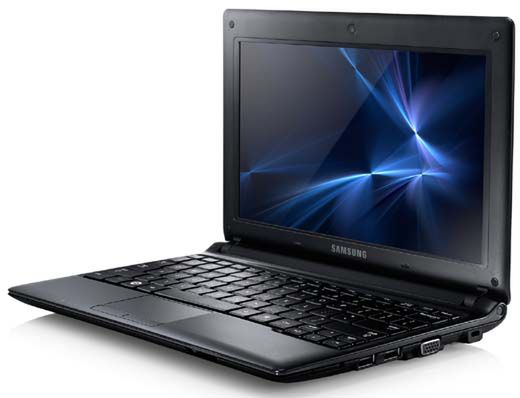

Rodzaje komputerów
Komputer stacjonarny
Komputer stacjonarny, potocznie desktop – rodzaj komputera osobistego, który zwykle jest na stałe umiejscowiony przy biurku, głównie ze względu na swoje gabaryty i ciężar.Składa się z co najmniej trzech zasadniczych elementów: jednostki systemowej, monitora i klawiatury.
Niegdyś istniał podział na komputery biurowe i domowe, w którym domowe miały zazwyczaj mniejszą moc obliczeniową, ale za to więcej możliwości multimedialnych. Obecnie jednak ten podział zanikł, gdyż multimedialność jest już standardem w komputerach PC, a gry komputerowe – czyli jedno z popularnych zastosowań komputerów domowych – często wymagają dla wykorzystania pełni ich możliwości naprawdę mocnych maszyn, podczas gdy do typowych prac biurowych wystarczają znacznie tańsze zestawy w podstawowej konfiguracji.
Laptop
 Laptop (z ang. lap - kolana, podołek + top - wierzch), notebook (z ang. notebook, notatnik, zeszyt) – rodzaj przenośnego komputera osobistego.
Laptop (z ang. lap - kolana, podołek + top - wierzch), notebook (z ang. notebook, notatnik, zeszyt) – rodzaj przenośnego komputera osobistego.
Do podtypów laptopów można zaliczyć ultrabooki i netbooki. Urządzeniami mniejszymi od laptopów są tablety i smartfony, które również są przenośnymi komputerami, choć nie są zgodne z IBM PC.
Pierwszym, jeszcze wizjonerskim urządzeniem z tej kategorii, był DYNABOOK. Jego projekt stworzył Alan Kay w laboratoriach Xerox Parc.
Szacuje się, że nawet dziś, w I dekadzie XXI wieku, jesteśmy zbyt ograniczeni technologicznie, by udało nam się skonstruować taki sprzęt.
Pierwszymi wyprodukowanymi przodkami laptopów były komputery przenośne, np. Osborne 1, Atari STacy czy Macintosh Portable. Z powodu zastosowania w nich akumulatorów kwasowo-ołowiowych komputery te ważyły od 9 do 14 kg.
W 2004 roku 70% sprzedanych komputerów nie były notebookami.
Netbook
 Netbook – mały, przenośny komputer osobisty, zazwyczaj tańszy, lżejszy i mniej wydajny od tradycyjnego laptopa, przeznaczony do przeglądania Internetu, wideorozmów, aplikacji online oraz prac biurowych w podróży.Netbooki posiadają zwykle systemy Linux, Windows Mobile, Windows XP lub Windows 7 oraz energooszczędne procesory Intel Celeron M ULV, Intel Atom, VIA C7, VIA Nano lub AMD Athlon Neo. Netbooki pracują zwykle na kartach Intel z rodziny GMA. Późniejsze modele posiadają również nVidia ION.
Mają też niewielki, najwyżej 12,1-calowy ekran, dysk typu SSD lub tradycyjny dysk twardy oraz zmniejszoną klawiaturę. Zazwyczaj nie posiadają napędów optycznych, posiadają za to porty USB, czytniki kart pamięci, Wi-Fi oraz Bluetooth.
Palmtop
 Palmtop (komputer podręczny, ang. personal digital assistant, PDA) – zminiaturyzowany komputer mieszczący się w dłoni lub kieszeni. Wyposażony w miniaturową klawiaturę fizyczną, albo wyświetlaną na ekranie lub w oprogramowanie do rozpoznawania pisma ręcznego.
Palmtop (komputer podręczny, ang. personal digital assistant, PDA) – zminiaturyzowany komputer mieszczący się w dłoni lub kieszeni. Wyposażony w miniaturową klawiaturę fizyczną, albo wyświetlaną na ekranie lub w oprogramowanie do rozpoznawania pisma ręcznego.
We wczesnych latach XXI wieku palmtopy stopniowo zostały prawie całkowicie wyparte przez smartfony, które oferowały podobne funkcje.
Palmtopy mają wiele funkcji, między innymi kalendarz, terminarz, kalkulator, notatnik (także notatki odręczne), książkę adresową; ponadto umożliwiają czytanie e-booków, przechowywanie i przeglądanie zdjęć oraz filmów, edycję tekstów, współpracę z urządzeniami GPS, odtwarzanie muzyki, obsługę Internetu (WWW, e-mail, komunikatory internetowe, telnet, SSH). Niektóre z nich posiadają wbudowany moduł GSM, dyktafon, cyfrowy aparat fotograficzny oraz kamerę.
Łączność z innymi urządzeniami zapewniają palmtopom: porty podczerwieni (IrDA), Bluetooth oraz Wi-Fi. Do synchronizacji z komputerem stacjonarnym (celem zabezpieczenia przed utratą danych) oraz do instalowania programów, najczęściej wykorzystywane jest łącze szeregowe (np. USB) lub Bluetooth.
Najpopularniejsze palmtopy to urządzenia pracujące pod kontrolą systemów operacyjnych Windows Mobile (zwane Pocket PC), Palm OS i Nokia Internet Tablet OS. Można też spotkać MDA (mobile digital assistant).